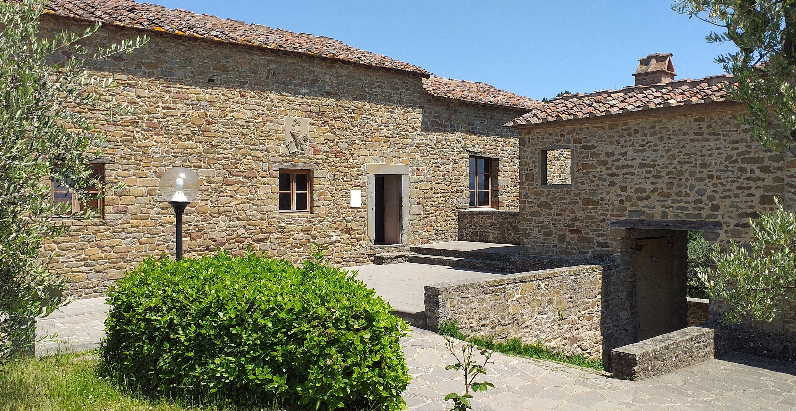

Leonardo was born out of wedlock to notary Piero da Vinci and a peasant woman named Caterina in Vinci in the region of Florence, and he was educated in the studio of Florentine painter Andrea del Verrocchio.
A handful of works that are either authenticated or attributed to him have been regarded as among the great masterpieces. These paintings are famous for a variety of qualities that have been much imitated by students and discussed at great length by connoisseurs and critics. By the 1490s Leonardo had already been described as a "Divine" painter. Leonardo received an informal education in Latin, geometry and mathematics. In later life, Leonardo recorded few distinct childhood incidents. One was of a kite coming to his cradle and opening his mouth with its tail; he regarded this as an omen of his writing on the subject. The second occurred while he was exploring in the mountains: he discovered a cave and was both terrified that some great monster might lurk there and driven by curiosity to find out what was inside. He also seems to have remembered some of his childhood observations of water, writing and crossing out the name of his hometown in one of his notebooks on the formation of rivers.

Within Leonardo's lifetime, his extraordinary powers of invention, his "outstanding physical beauty," "infinite grace," "great strength and generosity," "regal spirit and tremendous breadth of mind," as described by Vasari, as well as all other aspects of his life, attracted the curiosity of others. One such aspect was his vegetarianism and his habit, according to Vasari, of purchasing caged birds and releasing them.
Leonardo kept his private life secret. His sexuality has been the subject of satire, analysis, and speculation. This trend began in the mid-16th century and was revived in the 19th and 20th centuries, most notably by Sigmund Freud. Leonardo's most intimate relationships were perhaps with his pupils Salaì and Melzi. Melzi, writing to inform Leonardo's brothers of his death, described Leonardo's feelings for his pupils as both loving and passionate. It has been claimed since the 16th century that these relationships were of a sexual or erotic nature. Court records of 1476, when he was aged twenty-four, show that Leonardo and three other young men were charged with sodomy in an incident involving a well-known male prostitute. The charges were dismissed for lack of evidence, and there is speculation that since one of the accused, Lionardo de Tornabuoni, was related to Lorenzo de' Medici, the family exerted its influence to secure the dismissal.[106] Since that date much has been written about his presumed homosexuality and its role in his art, particularly in the androgyny and eroticism manifested in Saint John the Baptist and Bacchus and more explicitly in a number of erotic drawings.
The daring display of figure composition, the landscape elements and personal drama also appear in the great unfinished masterpiece, the Adoration of the Magi, a commission from the Monks of San Donato a Scopeto. It is a complex composition, of about 250 x 250 centimetres. Leonardo did numerous drawings and preparatory studies, including a detailed one in linear perspective of the ruined classical architecture that forms part of the background. In 1482 Leonardo went to Milan at the behest of Lorenzo de' Medici in order to win favour with Ludovico il Moro, and the painting was abandoned.
Much of the Collegiate Church of Saint Florentin at the Château d'Amboise, where Leonardo was buried, was damaged during the French Revolution, leading to the church's demolition in 1802. Some of the graves were destroyed in the process, scattering the bones interred there and thereby leaving the whereabouts of Leonardo's remains subject to dispute. While excavating the site in 1863, fine-arts inspector general Arsène Houssaye found a partially complete skeleton with a bronze ring on one finger, some white hair, and stone fragments bearing the inscriptions "EO," "AR," "DUS," and "VINC"—interpreted as forming "Leonardus Vinci". A silver shield found near the bones depicts a beardless Francis I, corresponding to the king's appearance during Leonardo's lifetime, and the skull's inclusion of eight teeth corresponds to someone of approximately the appropriate age. The unusually large skull led Houssaye to believe that he had located Leonardo's remains, but he thought the skeleton seemed too short. Other art historians say that the 1.73 metres (5.7 ft) tall skeleton may well be Leonardo's.
The remains, except for the ring and a lock of hair which Houssaye kept, were brought to Paris in a lead box, where the skull was allegedly presented to Napoleon III, before being returned to the Château d'Amboise and re-interred in the Chapel of Saint Hubert in 1874. A new memorial tombstone was added by sculptor Francesco La Monaca in the 1930s. Reflecting doubts about the attribution, a plaque above the tomb states that the remains are only presumed to be those of Leonardo. It has since been theorized that the folding of the skeleton's right arm over the head may correspond to the paralysis of Leonardo's right hand. In 2016, it was announced that DNA tests would be conducted to determine whether the attribution is correct. The DNA of the remains will be compared to that of samples collected from Leonardo's work and his half-brother Domenico's descendants; it may also be sequenced. The lock of hair and ring, now in a private US collection, were displayed in Vinci beginning on 2 May 2019, the 500th anniversary of the artist's death.